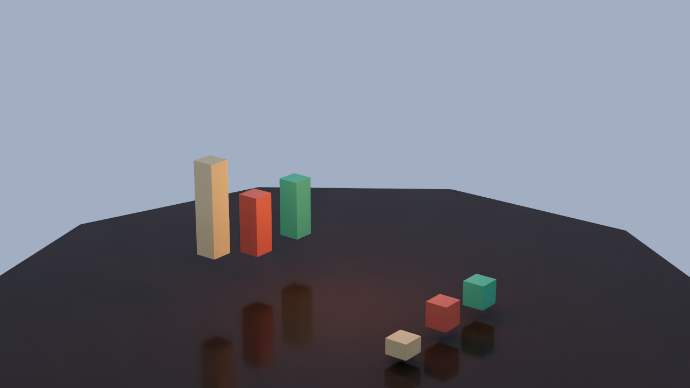
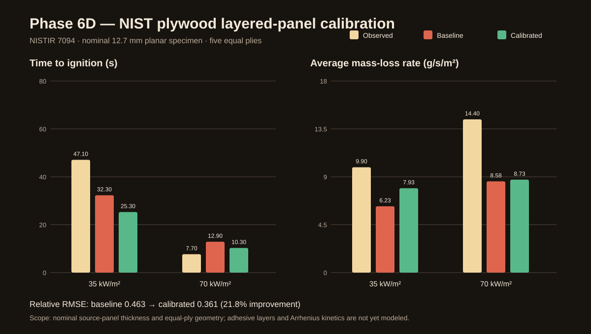
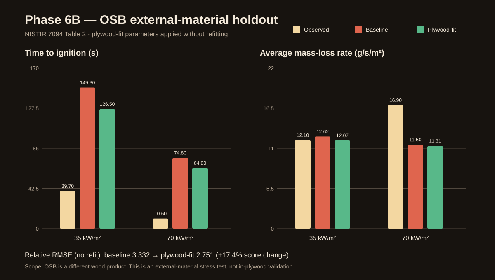
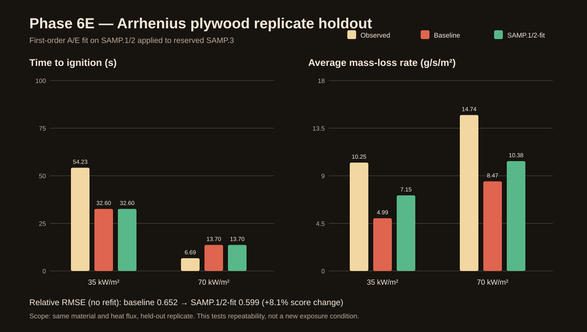
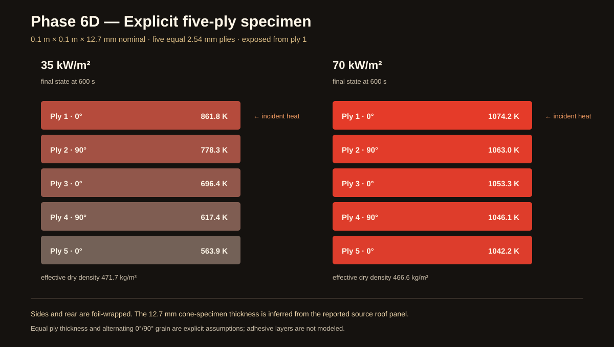
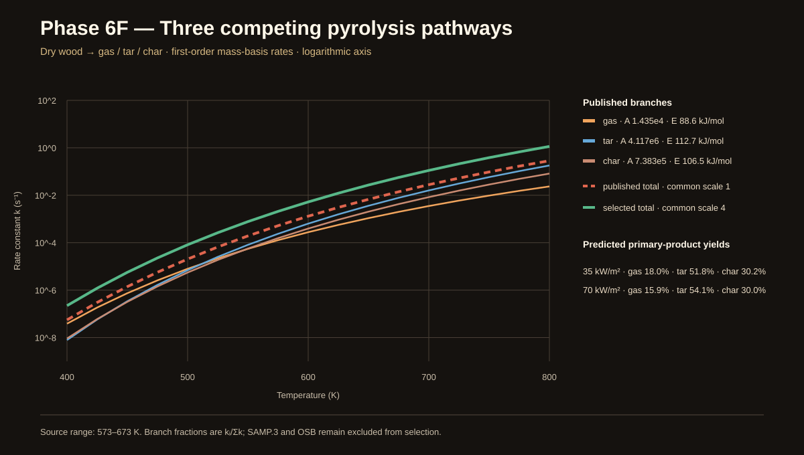
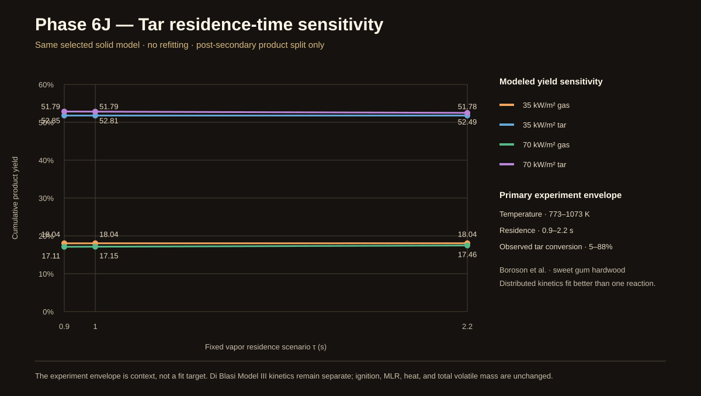

Residence-time sensitivity · Boroson experiment envelope
「それらしい」から、
誤差を示せるモデルへ。
固定1秒だった二次タール診断を、Borosonらの一次実験が扱った0.9–2.2秒・773–1073 Kの範囲で感度評価しました。NIST Model IIIの係数は再調整せず、総揮発分、熱収支、着火、質量減少にも戻しません。異なる原料・速度式の実験を「検証済み」とはせず、未計算の滞留時間が結果をどれだけ動かすかだけを示します。
{kind=link}

{kind=link}

{kind=link}

{kind=link}

{kind=link}

{kind=link}

{kind=link}

一次タールを分け直す
- tar → gas の一次Arrhenius反応
- A = 4.28×10⁶ s⁻¹
- E = 108 kJ/mol
- 一次収率と二次反応後収率を併記
実験範囲で感度を測る
- 滞留時間0.9 / 1.0 / 2.2秒
- 773 K未満は変換なし
- 1073 K超は端点へ固定
- 熱・Flow・質量減少へ非結合
Verification
改善と限界を、同時に合格条件へ。
スコア改善だけでなく、2熱流束の着火順、有限値、質量保存、固定探索数、PNG・SVG・CSV・USDの生成を検査します。
.\scripts\run_phase6.batScore0.469 → 0.452 relative RMSE
Search16 deterministic common-scale candidates
Tar splitprimary = secondary gas + surviving tar
Mass≤ 8.33 × 10⁻¹⁷ kg · best Table 2 cases
Measured on RTX 3090
校正と未使用データの結果
- Score improvement
- 3.7%
- Search time
- 53.8 s
- 35 kW/m² ignition
- 47.1 → 30.5 s
- 70 kW/m² ignition
- 7.7 → 12.2 s
- Best absorptivity
- 1.00
- Common A scale
- 4.0 upper bound
- Plywood cp 293 / 420 K
- 1214 / 1696
- OSB cp 293 / 420 K
- 1298 / 1813
- 35 kW/m² gas, τ 0.9 / 1 / 2.2 s
- 18.0351 / 18.0358 / 18.0423%
- 70 kW/m² gas, τ 0.9 / 1 / 2.2 s
- 17.1066 / 17.1460 / 17.4616%
- OSB holdout score
- 3.335 → 3.335 worse
- OSB 35 ignition
- 39.7 → 149.6 s
- OSB 70 ignition
- 10.6 → 74.8 s
- SAMP.1/2 fit score
- 0.417 → 0.398
- SAMP.3 holdout score
- 0.612 → 0.597
- SAMP.3 35 ignition
- 54.23 → 30.9 s
- SAMP.3 70 ignition
- 6.69 → 13.0 s
Known limits
範囲の借用は、モデルの検証ではない
Borosonらの実験はsweet gum hardwood、773–1073 K、0.9–2.2秒で約5–88%のタール変換を報告します。しかし原料、加熱条件、速度式が現在の合板モデルと異なるため、今回は温度・時間のシナリオ境界だけを借用しました。係数の適合や予測精度の主張には使いません。
What comes next
固体セルから気相輸送を分離する
チャー層の厚さ、透過率、圧力、流速、気相温度から滞留時間を求める独立状態を設計します。生成物収率または追加熱流束の一次データで外部検証できるまで、二次反応は熱・着火・Flowへ結合しません。
{kind=link}
{kind=link}
{kind=link}
{kind=link}
{kind=link}
{kind=link}
{kind=link}
{kind=link}
{kind=link}
{kind=link}